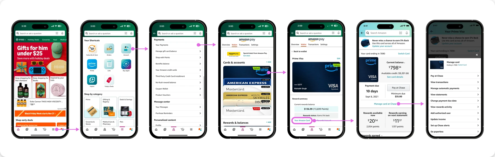
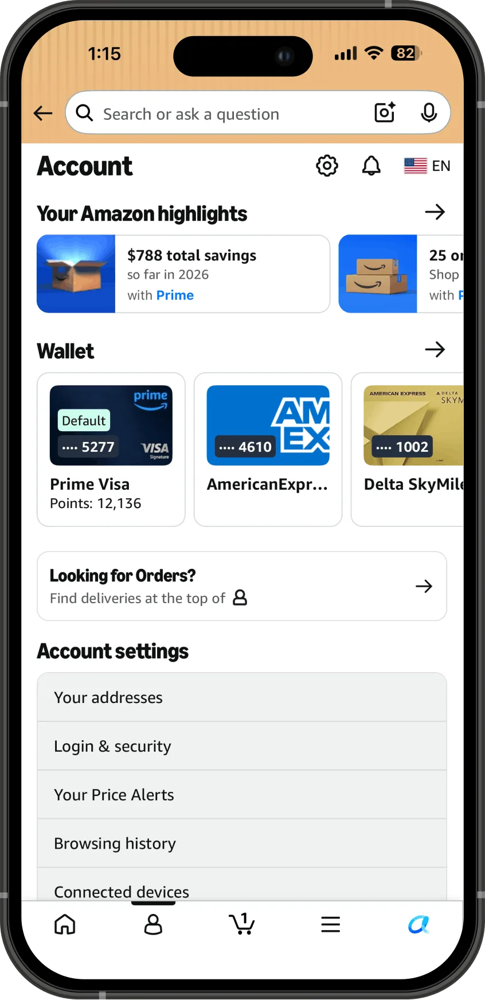
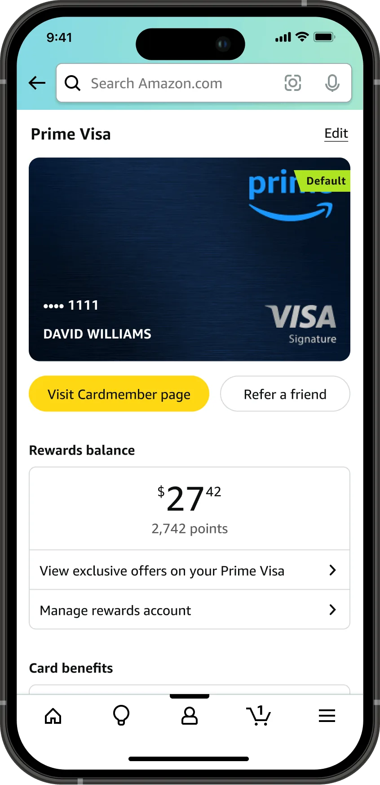
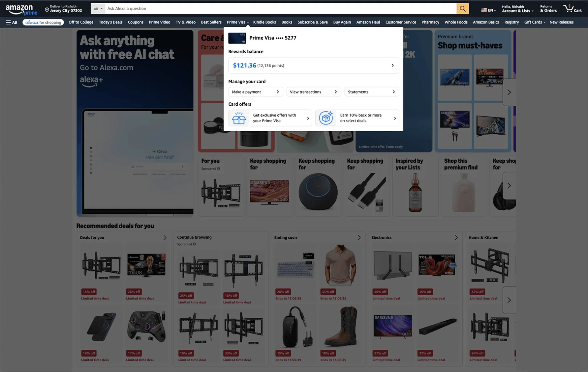
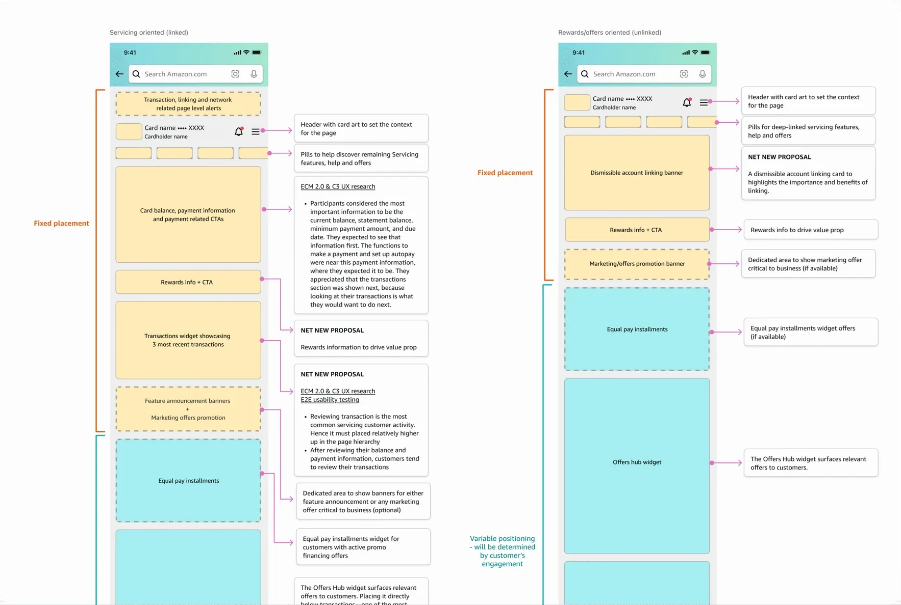
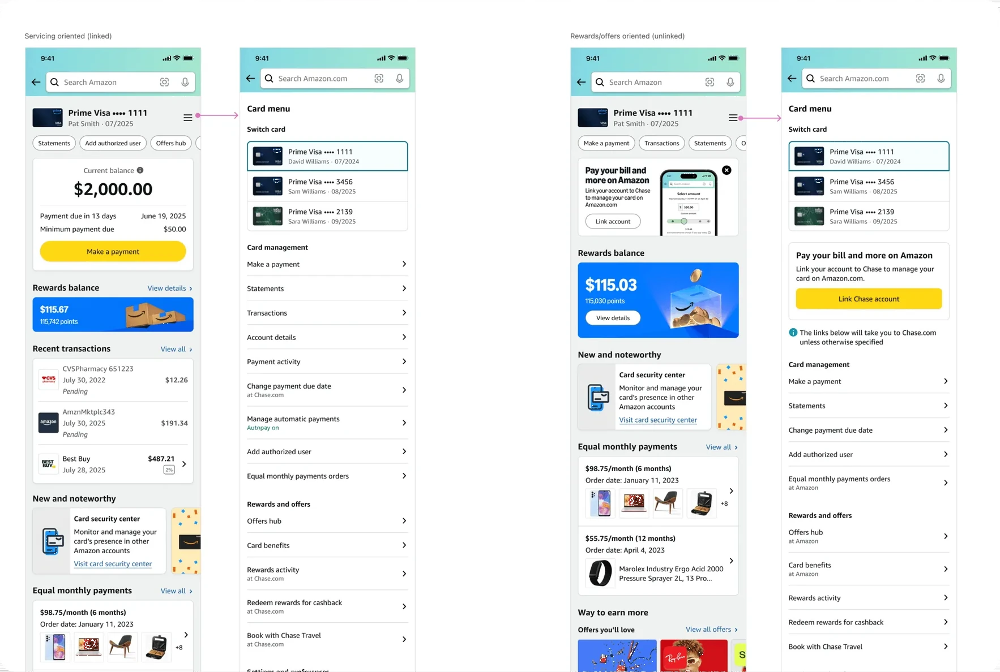

Credit card servicing
Amazon Visa Card Dashboard
Background
Because transactions are important and something that people check every time they go to their account, I would assume they would be more obvious
The Amazon Visa business runs on top of wallet behavior: getting customers to use the card off Amazon through features like card offers and bonus cashback on specific merchants and categories. The card dashboard, known internally as the Existing Cardmember page, is where customers discover and engage with all of it, servicing features and offers alike. But the page was designed before any of those features existed.
In 2022, as we were bringing card management in-house, I realized our servicing goals of reducing late fees, attrition, and 1 and 2 star ratings all depend on customers being able to find the features we were building, and that every one of those features was going to land on a layout that did not match how customers think about managing a credit card. No one owned the problem, so I made the case myself with a quick end-to-end user flow and wireframes. Product agreed but could not commit resources away from what was already planned.
A year after the servicing features launched, the data showed customers having exactly the difficulty I had predicted. 28% of customer contacts traced back to customers not finding servicing features, and 77% of usability participants, 23 of 30, could not find features like transactions on their first attempt. I made the case again, and the redesign was included in the product roadmap for 2025.

Project goals
Increase customer engagement with the dashboard. More engagement means customers find and use the servicing features we built, which is what moves late fees, attrition, and 1 and 2 star ratings, and it means they discover the offers and cashback experiences that drive card usage off Amazon. Engagement was the measure the project was held to, so page visits and unique monthly customers were the numbers that mattered.
Team and role
Product Manager, UX Designer (me), Software Developer Manager, 4 Engineers. My responsibilities included:
- End-to-end user flows for every servicing feature
- Dashboard wireframes and high-fidelity mock ups
- Ingress and placement decisions for each launching feature
- Accessibility annotations
- Presenting the redesign case to product leadership
Design and outcomes
While the redesign waited for resources, our UX team formed a working group and made placement decisions for every launching feature ourselves, deciding what earned a spot on the page and what lived behind an ingress, preserving as much of the customer experience as the existing platform allowed.
Once the redesign was approved, I started with the research and usage data to understand how customers were actually using the page. That surfaced a segment we were not serving at all: customers who would never link their Chase account and would always manage their card at Chase's app/website. Linking the Amazon and Chase accounts was a requirement to enable on-Amazon servicing. For them, most of the page was dead weight, a layout full of servicing features they could not use.
That insight shaped the core of the redesign: a dynamic layout that adapts to how each customer uses the page. Linked customers get a servicing-first dashboard with payments, transactions, and account details up front. Unlinked customers get a page built around what is relevant to them, like offers, rewards, and the option to link.
Discoverability could not be solved by the page alone, so I also designed new entry points in high-traffic locations across the app, like the Me tab and the navigation flyout, so customers could find servicing and offer features without knowing to look for the dashboard first. This also gave the offers team the reach they wanted through distribution instead of competing for position at the top of the page.
I transitioned the project to two designers with the framework, research, and stakeholder context in place, and the redesign and the discoverability features launched with the following outcomes.
2.3x Monthly page visits, 3.3M to 7.7M
+31% Unique monthly customers, 1.3M to 1.7M
$158 OPS DSI per account linked
Experience





This page shows only parts of the project. In-depth and sensitive details, and the end-to-end UX, can be covered in person or during the interview process.